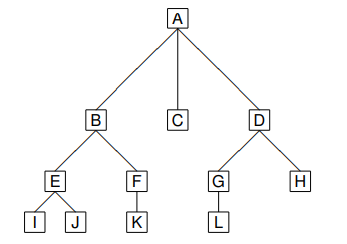
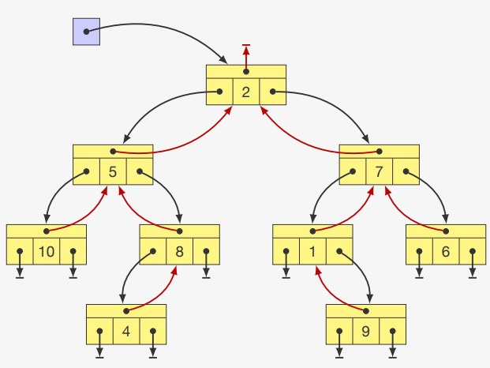
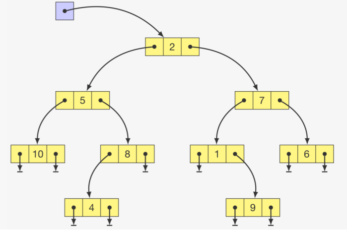

Árvores
1. Conceitos Gerais
Uma Árvore é uma estrutura de dados não-linear hierárquica composta por nós conectados por arestas. Cada árvore possui um nó raiz (topo) e subárvores formadas pelos filhos do nó raiz.
Princípio fundamental: "Um para muitos" - cada nó pode ter zero ou mais filhos, mas apenas um pai (exceto a raiz, que não tem pai).
2. Terminologia e Genealogia

- Raiz: Nó superior sem pai (A);
- Pai e filho: B é pai de E e F;
- Irmãos: B, C e D são irmãos (mesmo pai);
- Ancestrais: G, D, A são os ancestrais de L;
- Descendentes: E, F são descendentes de B;
- Nível: A tem nível 0; B, C, D têm nível 1; E, F, G, H têm nível 2;
- Altura: A árvore do exemplo tem altura 4 (número de níveis);
- Folha/Nó terminal/Nó externo: I, J, K, L, H, C são folhas (sem filhos);
- Nó interno: Nós com pelo menos um filho (A, B, D, E, F, G);
- Grau de um nó: Número de filhos (B tem grau 2);
- Grau de uma árvore: Máximo grau entre todos os nós (a árvore do exemplo tem grau 3);
3. Árvore Binária

3.1 Características
- Máximo de 2 filhos por nó (grau máximo = 2);
- Formada por uma raiz e subárvores binárias;
- Ordem dos filhos é importante (esquerda vs direita);
3.2 Classificação
- Árvore Estritamente Binária: Nós têm 0 ou 2 filhos;
- Árvore Binária Quase Completa: Todas as folhas estão no nível d ou d-1;
- Árvore Binária Completa: Todas as folhas estão em um mesmo nível;
- Árvore Binária Cheia: É uma árvore estritamente binária e completa;
3.3 Propriedades
- Se há N nós internos, então a árvore tem:
- N + 1 nós externos/folhas;
- Se a altura é h, então a árvore tem:
- No mínimo h nós internos;
- No máximo 2^h - 1 nós internos;
- Número máximo de nós no nível k: 2^k;
4. Implementação de Árvores Binárias
4.1 Estrutura de Dados
Estrutura de nó para árvore binária:
typedef int Item;
typedef struct node no;
struct node
{
Item item;
no *pai;
no *esq, *dir;
};
4.2 Operações Básicas
Criação e operações básicas:
// Criar uma árvore com raiz x e subárvores esquerda/direita
no *criar_arvore(Item x, no *p, no *e, no *d)
{
no *raiz = malloc(sizeof(no));
raiz->pai = p;
raiz->esq = e;
raiz->dir = d;
raiz->item = x;
return raiz;
}
// Encontrar avô de um nó
no *avo(no *elemento) {
if ((elemento != NULL) && (elemento->pai != NULL))
return elemento->pai->pai;
return NULL;
}
// Encontrar tio de um nó
no *tio(no *elemento) {
no *vo = avo(elemento);
if (vo == NULL) return NULL;
if (elemento->pai == vo->esq)
return vo->dir;
return vo->esq;
}
// Encontrar irmão de um nó
no *irmao(no *elemento) {
if ((elemento != NULL) && (elemento->pai != NULL)) {
if (elemento == elemento->pai->esq)
return elemento->pai->dir;
return elemento->pai->esq;
}
return NULL;
}
// Buscar elemento na árvore (busca linear)
no *busca_linear(no *raiz, Item v) {
if (raiz == NULL) return NULL;
if (raiz->item == v) return raiz;
no *encontrado = busca_linear(raiz->esq, v);
if (encontrado) return encontrado;
return busca_linear(raiz->dir, v);
}
// Contar número de nós
int numero_nos(no *raiz) {
if (raiz == NULL) return 0;
return 1 + numero_nos(raiz->esq) + numero_nos(raiz->dir);
}
// Calcular altura da árvore
int altura(no *raiz) {
if (raiz == NULL) return 0;
return 1 + fmax(altura(raiz->esq), altura(raiz->dir));
}
5. Percursos em Árvores Binárias
5.1 Percursos em Profundidade (Recursivos)

- Pré-ordem: 2, 5, 3, 8, 4, 7, 1, 9, 6.
- In-ordem: 3, 5, 4, 8, 2, 1, 9, 7, 6.
- Pós-ordem: 3, 4, 8, 5, 9, 1, 6, 7, 2.
Percursos em profundidade (recursivos):
// Pré-ordem: Raiz → Esquerda → Direita
void preordem(no *raiz) {
if (raiz != NULL) {
printf("%d ", raiz->item); // Processa raiz
preordem(raiz->esq); // Subárvore esquerda
preordem(raiz->dir); // Subárvore direita
}
}
// Inordem: Esquerda → Raiz → Direita
void inordem(no *raiz) {
if (raiz != NULL) {
inordem(raiz->esq); // Subárvore esquerda
printf("%d ", raiz->item); // Processa raiz
inordem(raiz->dir); // Subárvore direita
}
}
// Pós-ordem: Esquerda → Direita → Raiz
void posordem(no *raiz) {
if (raiz != NULL) {
posordem(raiz->esq); // Subárvore esquerda
posordem(raiz->dir); // Subárvore direita
printf("%d ", raiz->item); // Processa raiz
}
}
5.2 Percurso em Largura
- Ordem: 2, 5, 7, 3, 8, 1, 6, 4, 9
Percurso em largura usando fila:
// Estrutura de fila simplificada para o exemplo
typedef struct {
no **itens;
int frente, tras, capacidade;
} Fila;
Fila* criar_fila(int capacidade) {
Fila *f = malloc(sizeof(Fila));
f->itens = malloc(capacidade * sizeof(no*));
f->frente = f->tras = 0;
f->capacidade = capacidade;
return f;
}
void enfileira(Fila *f, no *item) {
f->itens[f->tras] = item;
f->tras = (f->tras + 1) % f->capacidade;
}
no* desenfileira(Fila *f) {
no *item = f->itens[f->frente];
f->frente = (f->frente + 1) % f->capacidade;
return item;
}
int fila_vazia(Fila *f) {
return f->frente == f->tras;
}
// Percurso em largura (BFS)
void percurso_em_largura(no *raiz) {
if (raiz == NULL) return;
Fila *f = criar_fila(100);
enfileira(f, raiz);
while (!fila_vazia(f)) {
no *atual = desenfileira(f);
printf("%d ", atual->item);
if (atual->esq != NULL) enfileira(f, atual->esq);
if (atual->dir != NULL) enfileira(f, atual->dir);
}
free(f->itens);
free(f);
}
6. Análise da Estrutura
6.1 Características
| Aspecto | Árvore Binária |
|---|---|
| Organização | Hierárquica |
| Acesso | Eficiente para busca (se balanceada) |
| Política | Hierárquica (pai-filho) |
| Flexibilidade | Dinâmica, tamanho variável |
6.2 Complexidade
| Operação | Árvore Balanceada | Árvore Degenerada |
|---|---|---|
| Busca | O(log n) | O(n) |
| Inserção | O(log n) | O(n) |
| Remoção | O(log n) | O(n) |
| Percursos | O(n) | O(n) |
| Espaço | O(n) | O(n) |
6.3 Vantagens
- Busca eficiente: O(log n) em árvores balanceadas;
- Hierarquia natural: Representa relações hierárquicas;
- Flexibilidade: Inserções e remoções eficientes;
- Ordenação: Percursos fornecem diferentes ordens;
6.4 Desvantagens
- Complexidade: Implementação mais complexa que estruturas lineares;
- Balanceamento: Necessidade de algoritmos de balanceamento;
- Overhead: Ponteiros consomem memória adicional;
6.5 Quando Utilizar
- Busca eficiente: Quando precisa buscar elementos rapidamente;
- Dados hierárquicos: Para representar estruturas organizacionais;
- Árvores de decisão: Em algoritmos de machine learning;
- Indexação: Em bancos de dados e sistemas de arquivos;
7. Aplicações Comuns
- Sistemas de arquivos: Diretórios e subdiretórios;
- DOM (Document Object Model): Estrutura de documentos HTML/XML;
- Árvores de decisão: Em inteligência artificial;
- Compressão de dados: Árvores de Huffman;
- Bancos de dados: Índices em B-trees;